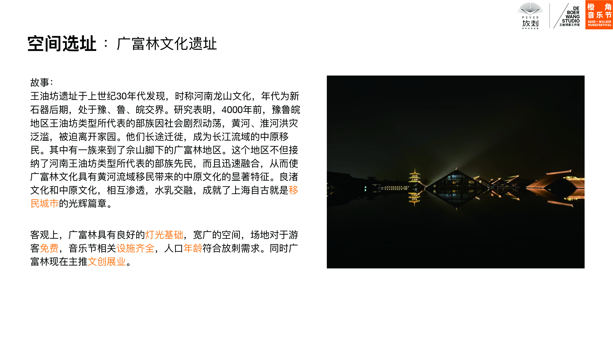
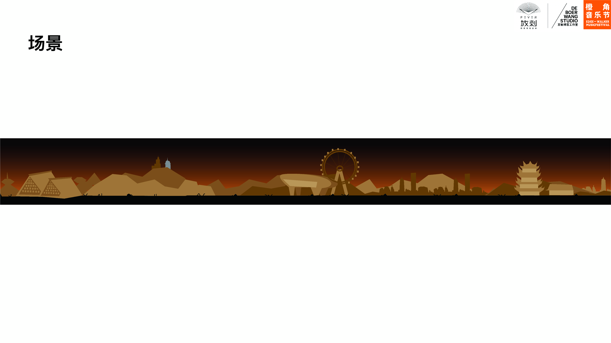

陈龙 Wx/Tel 18121115698
Chen Portfolio (能量 Energy) (自由 Free) (突破 Breakthough)

上海是一个鼓励包容的先锋城市，在年轻人在社会中被磨平棱⻆的社会现状，我们想激发年轻人生命中绝不 妥协的激情与生命活力。鼓励年轻音乐人展示个性，同时棱⻆在英源文化中为edge边界，同时也鼓励年轻人 跨出自己的边界，展现出自己的棱⻆。 在橙⻆音乐节，年轻人们不必再隐藏他们的“⻆”，这将会是有⻆年轻人的容身之所。在这里我们不必在意他人 的目光，也不必怀抱歉意，可以尽情释放的内心深处的自我，唤回自己的灵魂与活力。